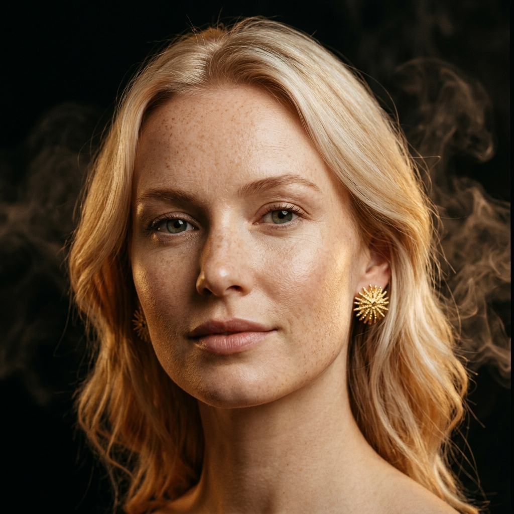

A Digital Avatar Collection
Six Women. Six Stories. One Fearless Spirit.
Curated for Ketisha × Fearless Jewellery by Eleanor Prospere
The Collection
The Visionary
Born between Lagos and Accra, Amara rose from a modest upbringing to build one of West Africa's most innovative tech companies. Her vision for accessible technology across the continent has earned her a place among the world's most influential entrepreneurs. She moves through boardrooms and tech summits with the same regal presence her grandmother carried through the markets of Kumasi.
Bold confidence radiates from every gesture. Amara is unapologetically ambitious, fiercely intelligent, and deeply connected to her roots. She leads with both her mind and her heritage — a visionary who sees the future while honoring the past.
Warm deep skin tone, sculptural cheekbones, close-cropped natural hair or braided updo. Her look balances power dressing with organic African elegance — architectural silhouettes softened by warm gold accents.
The Cultural Curator
Raised between the lush peaks of St. Lucia and the vibrant streets of Port of Spain, Isla grew up immersed in the rich tapestry of Caribbean culture. After earning her doctorate in cultural anthropology, she opened a gallery dedicated to Caribbean and diaspora artists, creating a space where stories of resilience, beauty, and identity are told through art. Her work bridges the ancestral and the contemporary.
Warm, magnetic, and endlessly curious. Isla draws people in with her infectious smile and keeps them with her depth. She is both the storyteller and the story — a woman who carries the rhythm of the Caribbean in everything she does.
Sun-kissed brown skin, loose natural curls cascading freely, and a warm smile that lights up every room. Her style is effortlessly tropical-luxe — flowing fabrics, vibrant prints, and gold jewelry that catches the Caribbean sun.
The Minimalist Rebel
From the quiet precision of Kyoto's artisan workshops to the electric chaos of Tokyo's Harajuku, Yuki forged her aesthetic in the space between tradition and rebellion. Her fashion label challenges conventions — deconstructing classic Japanese silhouettes and reconstructing them with a fearless, modern edge. She has shown at Paris, Milan, and Tokyo Fashion Weeks, always leaving audiences in stunned silence.
Understated power defines Yuki. She speaks softly but her designs scream. Behind the piercing gaze lies a woman of immense discipline, dry humor, and an uncompromising commitment to her craft. Minimalism is not simplicity — it is the art of saying everything with almost nothing.
Porcelain skin, a sharp geometric bob, and a piercing gaze that commands attention without effort. Her wardrobe is monochromatic precision — clean lines, sculptural forms, and a single piece of Fearless gold that becomes the focal point of every look.
The Passionate Creator
Valentina's canvas is the city itself. From the favelas of São Paulo to the colorful barrios of Bogotá, her massive murals tell stories of hope, resistance, and the unbreakable spirit of Latin American women. She paints with the same fire that fuels her activism — organizing community art programs, mentoring young artists, and using her platform to amplify marginalized voices.
Passionate, expressive, and impossible to ignore. Valentina wears her heart on her sleeve and her convictions on the walls. She laughs loudly, loves deeply, and creates with an urgency that comes from knowing art can change the world.
Warm olive-bronze skin, thick dark wavy hair that moves with energy, and expressive eyes that burn with passion. Her style is vibrant bohemian-luxe — rich colors, artisan textures, and Fearless gold that feels like wearable art against her sun-warmed skin.
The Elegant Disruptor
Zara walks between two worlds with effortless grace — the marbled halls of international courts and the ateliers of Marrakech and Beirut. After a distinguished career in human rights law, she channeled her influence into fashion philanthropy, funding artisan cooperatives and ethical luxury initiatives across the MENA region. She proves that elegance and justice are not mutually exclusive.
Poised, sharp, and devastatingly elegant. Zara disrupts with sophistication — her arguments are as precisely constructed as her wardrobe. Beneath the polished exterior is a fiercely compassionate woman who has seen the world's injustices and chosen to fight them in stilettos.
Olive skin, dark striking eyes framed by strong brows, and elegant bone structure that photographs like sculpture. Her style marries MENA opulence with modern minimalism — draped silks, structured blazers, and ornate Fearless gold that whispers of ancient craftsmanship.

The Modern Icon
Sienna traded the sterile corridors of a climate research institute for the glamorous world of sustainable luxury — not because she left science behind, but because she brought it with her. Her advocacy for ethical sourcing and zero-waste design has reshaped how luxury brands think about sustainability. She is proof that the future of luxury is responsible, beautiful, and non-negotiable.
Thoughtful, articulate, and radiantly composed. Sienna approaches every challenge with scientific precision and a poet's sensitivity. She is the calm voice in the room that everyone listens to — not because she speaks loudest, but because she speaks truest.
Fair skin with a constellation of light freckles, strawberry-blonde hair styled in effortless waves. Her aesthetic is Scandinavian clean meets British tailoring — neutral palettes, impeccable cuts, and Fearless gold that adds warmth to her cool-toned elegance.
The Modern Sovereign
Born to wildlife conservationists in East Africa, Zuri spent her childhood in the wild before building a global award-winning luxury eco-lodge brand. Her properties prove that high-end hospitality, deep ecological preservation, and community empowerment can coexist seamlessly. She is a powerhouse in the sustainable travel movement.
Dignified, articulate, and deeply grounded. Zuri possesses a calm, majestic presence. She speaks with the quiet authority of someone who leads with purpose and respects the natural world.
Deep mahogany skin with a radiant glow, completely shaved head showing off perfect bone structure and a majestic, tall posture. Styled in structured drapery, sweeping silk capes, and rich warm earth tones like ochre, terracotta, and dark bronze.
The Avant-Garde Sculptor
Kiran broke traditional family expectations in Mumbai to pursue metalwork and industrial design in Berlin. Today, she creates large-scale brutalist metal sculptures exhibited in galleries across Europe. Her work fuses the structural coldness of steel with the organic, fluid warmth of gold jewelry.
Intensely focused, quiet, and deeply intellectual. Kiran speaks mostly through her art, but when she talks about design, her eyes spark with raw creative fire.
Warm olive skin with golden undertones, completely shaved head, large expressive dark eyes, and strong cheekbones. Minimalist deconstructed tailoring in all-black linen or raw silk, boxy blazers, and zero color except for glowing 22k gold jewelry.
The Maritime Visionary
Raised in a coastal fishing village, Kai earned a scholarship in marine science and turned his passion for the ocean into a boutique blue-economy pearl farming business. His farming methods active restore damaged coral reefs, proving that commercial luxury and ecological preservation can go hand in hand.
Charismatic, adventurous, and serene. Kai carries the easy, warm confidence of a traveler. He is deeply connected to the marine ecosystems he protects.
Sun-bronzed skin with warm copper undertones, athletic build, short dark hair in a textured crop, and warm eyes. Styled in relaxed coastal luxury: high-quality raw linen shirts in cream/parchment and structured dark charcoal trousers.
The Heritage Architect
Born into a family of classical musicians, Aram studied architecture in Paris before returning to the Levant to design museums and restore historical ruins. His architectural designs marry ancient geometry with sleek contemporary materials, preserving history while creating space for modern dialogues.
Cultured, strategic, and soft-spoken. Aram has a composed diplomat's presence. He is intensely curious and respects classical heritage and the craftsmanship of the past.
Olive skin, striking dark almond eyes with thick brows, short neat beard, and sharp jawline. Styled in classic double-breasted blazers, dark grey or black mock necks, and silk pocket squares with a monochromatic dark palette.
The Heritage Pioneer
Tariq studied architecture at Cambridge before launching his own practice focused on green urban design in London and Accra. He merges traditional African clay and timber building methods with state-of-the-art modern technologies, building cities that exist in harmony with the local climate.
Highly analytical, strategic, and quietly confident. Tariq speaks with structured precision. He is exceptionally passionate about historical preservation and eco-architectural systems.
Deep dark skin with warm undertones, short sharp fade haircut, strong jawline, and a clean neat beard. Styled in classic double-breasted blazers, dark raw linen shirts, and high-necked knitwear to showcase structured chokers.
The Rhythmic Curator
A Grammy-nominated producer, Malachi builds visual and audio soundscapes that connect dub reggae roots with classical scoring. He collects traditional sonic archives and uses modern technology to create immersive audio installations, bridging heritage and digital sound design.
Charismatic, relaxed, and deeply philosophical. Malachi speaks with a melodic, low voice. He holds a quiet, magnetic composure and is intensely focused on raw artistic expression.
Luminous dark skin, warm dark eyes, and long mature dreadlocks styled up in an elegant bun with gold threads woven through. Styled in relaxed open-collared silk shirts, velvet blazers, and textured premium fabrics.
The Tech Philanthropist
Kenji Takahashi-Jackson raised seed capital in Tokyo and Silicon Valley to launch an incubator supporting minority-owned tech companies. He uses artificial intelligence models to solve logistics and access issues in developing regions, proving that venture funding can serve humanitarian design.
Highly analytical, strategic, yet exceptionally warm and approachable. Kenji is an energetic speaker who brings a modern, tech-forward outlook to global leadership.
Warm golden-brown skin, striking dark eyes, short curly hair styled in a clean taper fade, and defined jawline. Styled in tailored luxury sportswear, structured high-necked sweaters, and modern tech-wear blazers.
The Culinary Alchemist
Mei-Ling Jackson-Tanaka fused her Jamaican and Taiwanese roots into a Michelin-starred fine-dining concept. Her culinary philosophy celebrates global culinary migrations, tracing the deep cultural exchange of agricultural and spice paths between East Asia and the Caribbean islands.
Passionate, vivacious, and highly creative. Mei-Ling speaks with direct warmth and storytelling flair. She possesses boundless curiosity and artistic energy.
Warm caramel skin, dark curly-wavy hair pulled up in a messy bun with gold pins, warm expressive eyes, and elegant bone structure. Styled in draped linen kimonos, silk chef coats in obsidian, and gold hairpins as highlights.
The Cyber-Punk Activist
Naomi merges traditional Navajo weaving patterns with virtual cyber-punk aesthetics in her digital clothing line. Coding decentralized platforms, she fights to protect indigenous intellectual property and digital sovereignty, advocating for indigenous artists in digital design spaces.
Quietly fierce, rebellious, and strategically brilliant. Naomi expresses her activism and complex heritage through virtual digital couture and code.
Warm copper skin, striking high cheekbones, intense dark eyes, and a punk-luxe haircut with shaved sides and a long textured dark braid. Styled in deconstructed tailoring, dark leather jackets, and asymmetric black shapes.
Digital Marketing
Social Media Templates
Platform-optimized templates ready for deployment across all major social channels.
Instagram Post
1080 × 1080 pxSquare format post — perfect for avatar portrait reveals and jewelry close-ups.
Story / Reel
1080 × 1920 pxVertical full-screen format — ideal for immersive avatar storytelling and behind-the-scenes content.
Facebook Post
1200 × 630 pxLandscape link-share format — optimized for feed visibility and engagement.
Facebook Cover
820 × 312 pxUltra-wide banner format — showcases multiple avatars in a panoramic composition.
Meet AMARA — The Visionary ✨ #FearlessJewellery #DigitalAvatar
TikTok Cover
1080 × 1920 pxVertical video cover — designed for maximum impact in the TikTok feed with bold avatar reveals.
LinkedIn Post
1200 × 627 pxProfessional landscape format — positions the avatar collection as a premium brand narrative for B2B and industry audiences.